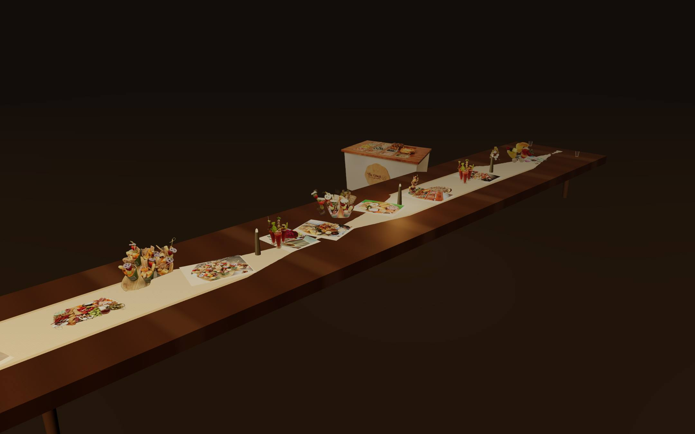

Prologue · 4:40 AM
Four Forty in the Morning
Thirty-five years, and the blade still leads.
There is a light over a cutting board at 4:40 in the morning that nobody outside a kitchen ever sees. One bulb, one block, one woman who has done this twelve thousand seven hundred and seventy-five times and has never once described it as a passion.
The prosciutto goes on whole. Meat that has been handled is meat that has already started to give up, so she works it once. The blade enters at the fat cap and travels the length of the shank without stopping, and what comes off is warm and thin enough to read a wine list through, because it was cut ninety seconds ago and not sliced in a plant in Iowa last Tuesday.
Then the honeycomb — Texas wildflower, from hives she can name — cut off the frame in slabs and set down still weeping onto the slate.
You will not find any of this on a menu, because a menu is a list of things and this is a record of hours.
The blade goes back to the stone every Tuesday. One thousand eight hundred and twenty Tuesdays. A dull knife bruises what it cuts.
Act One · 10:40 AM
Nothing on This Board Agrees With Anything Else.
Manchego at twelve months. Brie at room temperature. Figs split by thumb, never knife.
Put your hand flat on the counter. That is roughly the temperature the marble should be, and roughly the temperature the brie should never be. Cold brie is a mistake people make in public and blame on the cheese.
Manchego, D.O.P., twelve months in La Mancha. Cut it in triangles, because a triangle has a point and a point is somewhere to start when a nervous guest is looking at a counter full of strangers. Brie from Meaux, out of the cooler since last night and standing at room temperature now, so that at the cut it slumps instead of fighting. Split the figs with your thumb. A knife crushes the seed, and the seed is where the perfume lives.
Two things on this board may never share a temperature. Nothing may share a height. Fat needs acid or it coats the mouth and turns to paste by the third bite. Salt needs sweet or it lands like a dare.
The board is load-bearing. Everything on it is holding something else up.
Grazing tables for 50 guests and up. The cart, boards, sweets and sips for everything else. I take one party at a time.
Act Two · 6:40 PM
A Thousand Pieces. One Hour and Forty Minutes.
Fifty guests, or a hundred and fifty. The board gets longer; the rules do not.
At fifty guests it stops being a board. At a hundred and fifty it becomes architecture — twelve unbroken feet of it down the center of the room — and people stand around it the way people stand at a river.
Twelve feet by fourteen inches is about two thousand square inches. About two thousand square inches is about a thousand separate things to pick up. Somebody will have built every one of them by hand, in a kitchen, in the dark, before any of these people had confirmed they were coming.
Every table runs ninety minutes. You talk to your guests. By nine o'clock about four hundred hands will have reached across this table. By ten forty, the board that took a full working day to build will be down to crumbs and orange peel and one untouched slice of something nobody recognised.
That is the point of it. You are not buying food. You are buying about a thousand small moments of people reaching past each other.
That one. Somebody's about to take it.
Act Three · 11:40 PM
Somewhere After Ten, the Night Decides Whether to End or Turn.
Eleven forty. The cart rolls in.
There's a moment at every long party. Usually a little after ten. Usually when the playlist has gone soft. The night decides whether it's going to end or turn.
Ours turns.
It comes in under Edison bulbs. Twelve feet of it. Nobody hears it arrive so much as feels the street change.
Beignets. Fried to order, which means the first one is too hot and the second one is exactly right. Powdered sugar going up through the lamplight like dust off a dirt road in July. Champagne cold enough that the glass hurts.
The honeycomb from 4:40 AM — drizzled over the second one.
Here is what nothing else in this price range does. Put the beignet in one hand and the flute in the other and hold them both. That's the whole product. Nobody talks about the food at eleven forty. They talk about the noise they made when it arrived.
The Holy Grail of Grazing
And Then There's the One Nobody Forgets.
When it's set, the party stops. About four seconds. Four seconds of silence at a catered event is rarer than you'd think, and those four seconds are what the money buys. Not the food. The four seconds.

75 GUESTS $2,000
150 GUESTS $3,500
Five cheeses · Five meats · Two sliders · Guacamole · Pico de gallo
Epilogue · 7:15 AM
You Choose. We Cut.
Twelve thousand seven hundred and seventy-five days. Yours would be the next one.
The morning after, at 7:15, before her own day starts, the host is already doing it again. Not eating. Planning.
She moves a number, and twenty becomes forty. Behind her the board from ten forty rebuilds itself. The twelve feet from six forty reaches further down the room. The cart rolls back in and the night gets four hours longer.
That is why you spent nine screens with a knife before you saw a single figure. By the time you reach the calculator you already know what you're buying: six hundred mornings a year, one blade honed every Tuesday, thirty-five years of knowing which cheese dies at minute twenty.
Here is the part nobody says out loud. You have just watched a day you weren't invited to. That's what the desire you're feeling is. It's the gap between what you noticed and what you missed.
At a good party, the host is the only person who doesn't get to eat. You answer the door. You work the room. You spend your own evening on your feet, and you'll remember it later as a blur of other people having a good time.
Pick your people. Pick your date. Let us carry the table and hand you back your hands. For one night, you get to be a guest at your own party.
The Quote
Move the number. Watch the night take shape.
Grazing tables start at 50 guests.
Three sliders, three salads, three dips, two hummus, nuts, chips and a full vegetable spread.
Tomball, Texas
A quote request, not a booking.
Dates and prices are confirmed by Tricia.
You stopped at six of them. There were about a thousand.
Charcuterie Chick